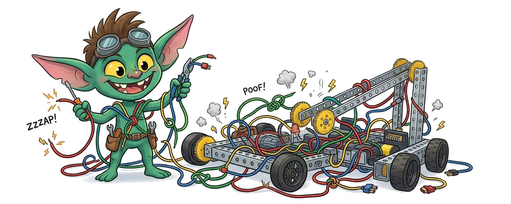
Every FTC team eventually meets "the gremlin." The robot works perfectly on the bench, passes inspection, drives through practice — and then mid-match, the Control Hub reboots, a motor freezes, or the Driver Hub loses connection. The team scrambles, swaps parts, and the gremlin vanishes as mysteriously as it arrived.
These problems are almost never random. They are electrical — caused by static discharge, noise coupling into signal wires, or connectors that have worked themselves loose. This lesson will teach you where these gremlins come from and how to evict them from your robot for good.
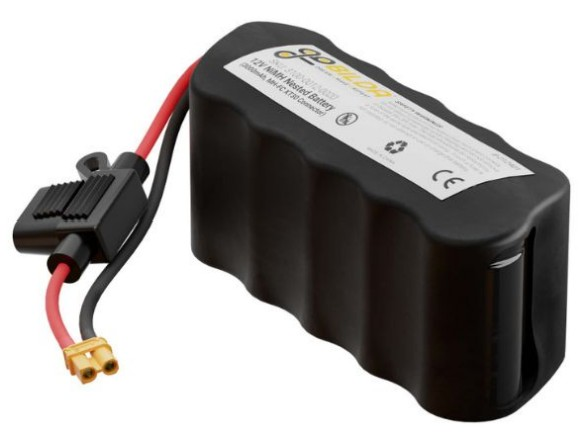
FTC robots run on a 12V NiMH (Nickel-Metal Hydride) battery. This battery is the single power source for everything — drive motors, servos, the Control Hub, the Expansion Hub, and all of their electronics. That means every amp of current a motor draws flows through the same wires and connectors that feed your fragile digital logic.
This is the root tension in FTC wiring: big, noisy motor power and tiny, sensitive digital signals all live in the same small robot, sharing the same battery, the same frame, and often the same wire bundles.
Electrostatic Discharge (ESD) is the most dramatic of the electrical gremlins. You have felt it yourself — shuffling across carpet in socks and touching a doorknob. That tiny spark can be several thousand volts. On a robot, the voltages can be even higher.
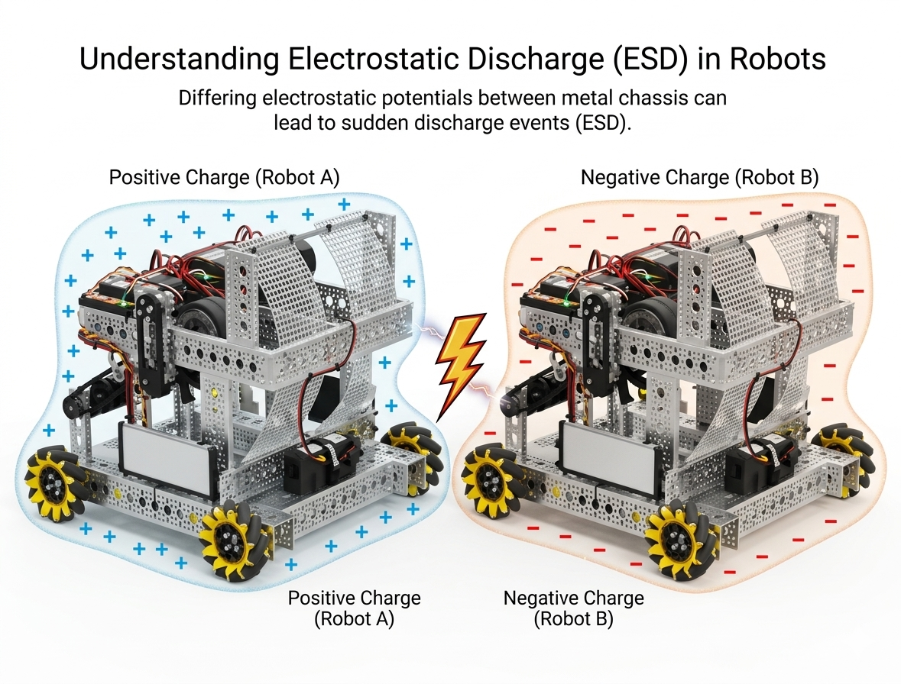
Here is how it happens on the field:
The worst part? ESD is intermittent. It depends on humidity, carpet material, wheel tread, driving style, and which robot you collide with. Some matches, nothing happens. Other matches, three reboots in 30 seconds. Teams blame the code, the battery, the USB cable — everything except the actual cause.
The single most important ESD defense is the grounding strap. This is an official part sold by REV Robotics (REV-31-1269). It connects the battery's negative terminal (via an XT30 connector) to a ring terminal bolted directly to the metal frame.
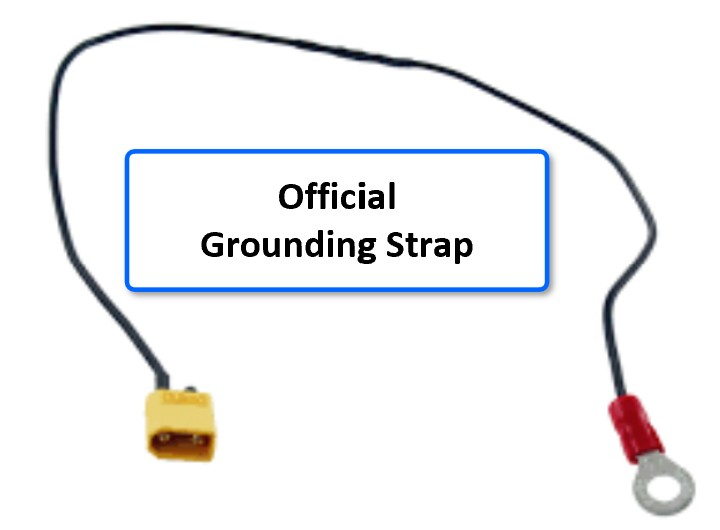
Without the grounding strap, the robot's frame and the electronics have no deliberate electrical connection. Static charge accumulates on the frame with no easy path to the battery's ground reference. When a discharge event happens, the current finds its own path — and that path may go straight through the Hub's ground pins.
The grounding strap gives static charge a low-impedance path from the frame to battery ground, keeping the frame at the same potential as the electronics. No voltage difference means no spark through the Hub.
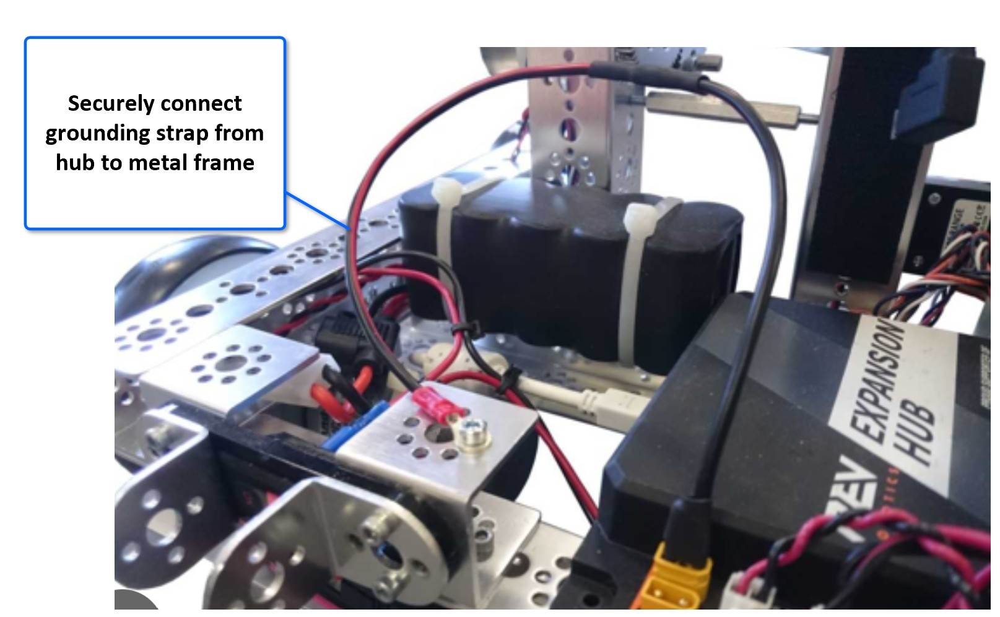
Reference: REV Robotics ESD Mitigation Guide; FTC Wiring Guide — Presented at FTC Kickoff Events (PDF)
Even with a grounding strap, you want to isolate the Control Hub and Expansion Hub from the metal frame. If the Hub case is bolted directly to aluminum channel, a discharge pulse on the frame has a direct metal path into the Hub's housing and ground plane.
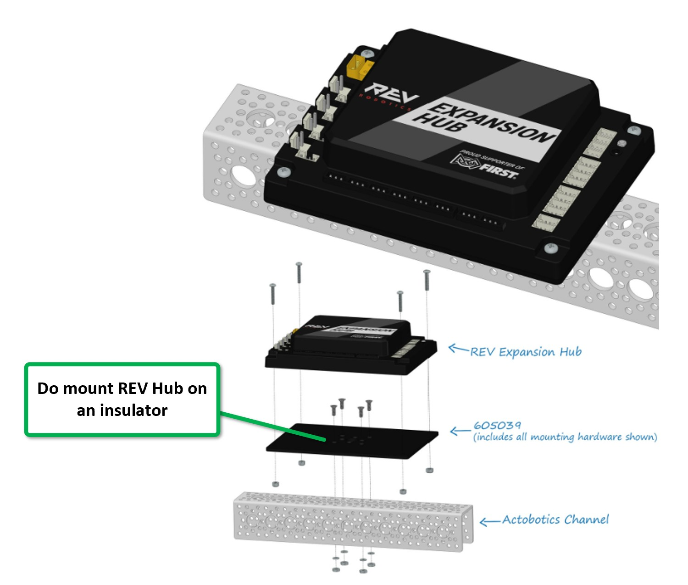
REV sells an insulating mount plate (part 605039) that goes between the Hub and the channel. Use it. The nylon standoffs included in the kit are the insulator — do not replace them with metal screws.
ESD happens at the point of contact. If the robot bumps another robot or the field wall with bare metal, the discharge goes straight into the frame. Cover every external surface that might contact another robot or a game element with an insulator — plastic, polycarb sheet, rubber bumpers, even tape.
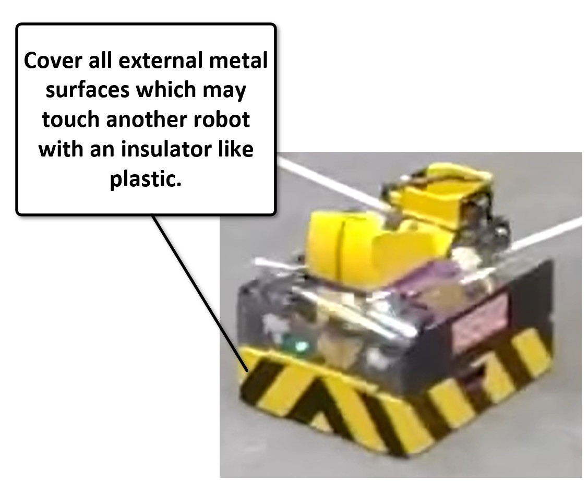
This does not prevent charge buildup, but it prevents the discharge event from happening in the first place. No metal-to-metal contact means no conduction path for the spark.
Some teams go further and spray-coat exposed channel ends with Plasti Dip or wrap them in electrical tape. Every bit of insulation helps.
ESD is dramatic — a single event that crashes the system. Noise coupling is more subtle. It does not crash the Hub; instead, it corrupts sensor readings, causes phantom button presses, or makes the IMU drift wildly.
DC motors are electrically noisy. When the motor controller rapidly switches current (PWM), the motor wires radiate electromagnetic energy — just like a tiny radio transmitter. Any wire running near those motor wires acts as a receiving antenna, picking up that noise.
The physics is straightforward: a changing current in one wire creates a changing magnetic field, which induces a voltage in any nearby wire. This is electromagnetic coupling (also called crosstalk). The closer the wires, and the longer they run together, the worse it gets.
This is one of the most common and least-understood wiring mistakes in FTC:
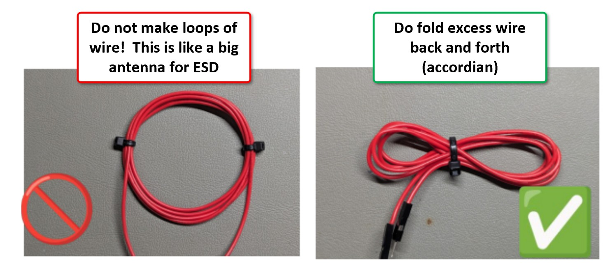
When you have excess wire, your instinct is to coil it into a neat loop and zip-tie it. Do not do this. A coil of wire is literally an inductor — it picks up every changing magnetic field in the vicinity and converts it into voltage on the wire. The bigger the loop area, the more noise it captures.
Instead, fold the excess wire back and forth in an accordion pattern. This causes the magnetic fields induced in adjacent sections to cancel each other out, dramatically reducing the antenna effect.
FTC robots are small, and it is tempting to bundle all wires together into one neat loom. Resist this temptation. Run motor power wires on one side of the robot and sensor/signal wires (I2C, encoder, digital, analog) on the other. If they must cross, cross them at a 90-degree angle — this minimizes the coupling length.
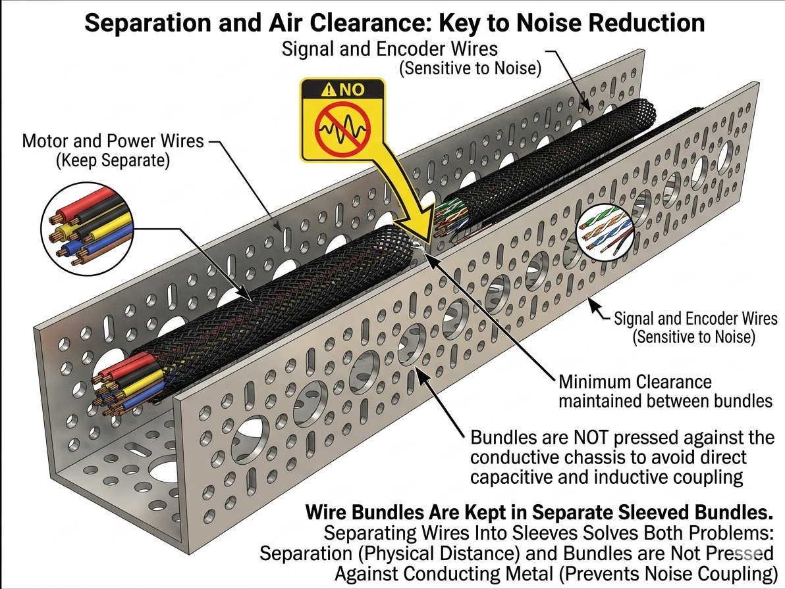
The gold standard is to run each group in its own braided sleeve through the robot's channel, as shown above. The sleeves keep bundles organized, and the physical separation plus air gap between them prevents both capacitive and inductive coupling. Do not press wire bundles flat against a conductive metal chassis either — that metal becomes a coupling path.
Also keep motor wires away from the USB cable between the Control Hub and Driver Hub. Noise on this cable can cause the Driver Hub to disconnect and reconnect, which looks like a random Wi-Fi dropout.
Reference: "FTC ESD and Wiring Best Practices" presentation (PDF); see also the video walkthrough by FTC community mentor (YouTube).
Not all ports on the REV Hubs are created equal. Two common mistakes can cause bizarre problems:
Port I2C-0 on both the Control Hub and the Expansion Hub is internally wired to the onboard BHI260AP IMU. If you plug an external I2C sensor into this port, it shares the bus with the IMU. This causes bus contention — two devices trying to talk at the same time on the same two wires. The result is corrupted IMU data, corrupted sensor data, or both.
Use I2C ports 1, 2, or 3 for external sensors. Leave port 0 for the IMU.
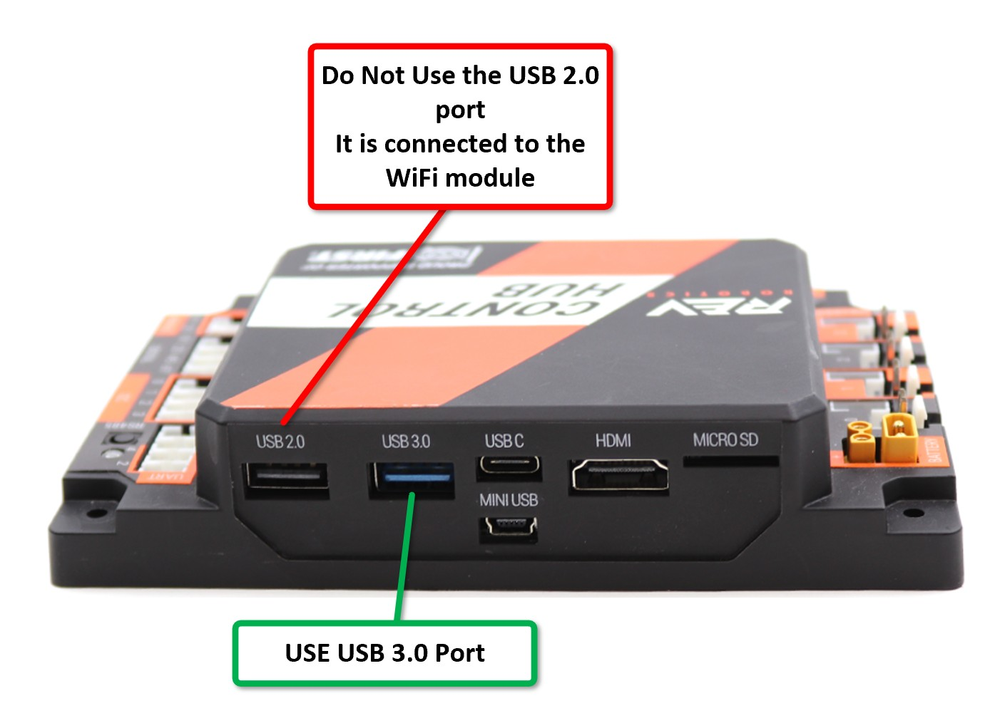
The REV Control Hub (REV-31-1595) has multiple USB ports on its front face. The USB 2.0 port is internally connected to the Wi-Fi module and should not be used for cameras, USB hubs, or other peripherals. Plugging something into it can interfere with the robot's Wi-Fi connection to the Driver Hub.
Always connect external USB devices to the USB 3.0 port (the one with the blue plastic insert).
The XT30 connector is the standard power connector in FTC. It is compact and rated for the currents involved, but over hundreds of plug/unplug cycles, the internal split-pin contacts lose their spring tension. When this happens, the connector makes intermittent contact — solid enough most of the time, but a bump or vibration during a match can momentarily break the circuit. The Hub sees a power dropout and reboots.
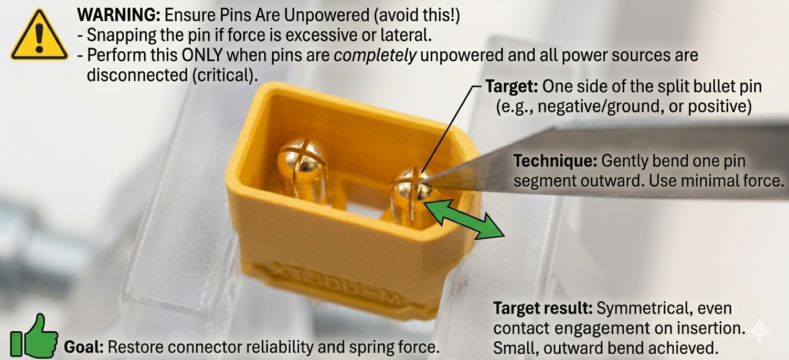
If a connector feels loose when you plug it in:
Before every competition, run through this checklist:
If you can answer "yes" to every item, you have eliminated the vast majority of the electrical gremlins that plague FTC robots. The few that remain are almost always: